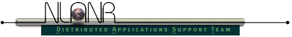

[Compiling |
Features |
Tuning a TCP connection |
Tuning a UDP connection |
Running multicast servers and clients |
IPv6 Mode |
Representative Streams |
Running Iperf as a daemon |
Running Iperf as a Windows Service ]
Iperf compiles cleanly on many systems including Linux, SGI IRIX, HP-UX,
Solaris, AIX, and Cray UNICOS. Use 'make' to configure for your OS and
compile the source code.
If you have problems, please report them to dast@nlanr.net and
we will try to fix them quickly. For Iperf in UDP server mode, this is also used to bind and join to a
multicast group. Use addresses in the range 224.0.0.0 to 239.255.255.255
for multicast. See also the -T
option. Client side:
Note that many OSes and hosts have upper limits on the TCP window size. These
may be as low as 64 KB, or as high as several MB. Iperf tries to detect when
these occur and give a warning that the actual and requested window sizes are
not equal (as below, though that is due to rounding in IRIX). PSC has a list detailing how to
change the default and maximum window sizes for various OSes. For more
information on TCP window sizes, see the User's
Guide to TCP Windows.
Here is an example session, between node1 in Illinois and node2 in North
Carolina. These are connected via the vBNS backbone and a 45 Mbit/sec DS3 link.
Notice we improve bandwidth performance by a factor of 3 using proper TCP window
sizes. Use the adaptive window sizes feature on platforms which allow setting
window sizes in the granularity of bytes.
You will want to adjust the datagram size (-l) to the size your application
uses.
The server detects UDP datagram loss by ID numbers in the datagrams. Usually
a UDP datagram becomes several IP packets. Losing a single IP packet will lose
the entire datagram. To measure packet loss instead of datagram loss, make the
datagrams small enough to fit into a single packet, using the -l option. The
default size of 1470 bytes works for ethernet. Out-of-order packets are also
detected. (Out-of-order packets cause some ambiguity in the lost packet count;
Iperf assumes they are not duplicate packets, so they are excluded from the lost
packet count.) Since TCP does not report loss to the user, I find UDP tests
helpful to see packet loss along a path.
Jitter calculations are continuously computed by the server, as specified by
RTP in RFC 1889. The client records a 64 bit second/microsecond timestamp in the
packet. The server computes the relative transit time as (server's receive time
- client's send time). The client's and server's clocks do not need to be
synchronized; any difference is subtracted out in the jitter calculation. Jitter
is the smoothed mean of differences between consecutive transit times.
To test multicast, run several servers with the bind option (-B, --bind) set
to the multicast group address. Run the client, connecting to the multicast
group address and setting the TTL (-T, --ttl) as needed. Unlike normal TCP and
UDP tests, multicast servers may be started after the client. In that case,
datagrams sent before the server started show up as losses in the first periodic
report (61 datagrams on arno below).
Server side: Client side: Note: Iperf version 1.6.2 and eariler require a IPv6 address to be explicitly bound
with the -B option for the server. The -F option is for file input. E.g.
Examples:
Note: If you stop want to restart the Iperf service after having killed
it with the Microsoft Management Console or the Windows Task Manager, make
sure to use the proper OPTION in the service properties dialog.
Iperf User Docs
Mark Gates
May 2004
Ajay Tirumala
Jon Dugan
Kevin Gibbs
Compiling
Once you have the distribution, on UNIX,
unpack it using gzip and tar. That will create a new directory
'iperf-<version#>' with the source files and documentation.
To install iperf, use 'make install',
which will ask you where to install it. To recompile, the easiest way is to
start over. Do 'make distclean' then './configure; make'. See the Makefile
for more options.
gunzip -c iperf-<version>.tar.gz | tar -xvf -
cd iperf-<version>
./configure
make
Features
Command line option
Environment variable option
Description
Client and Server options
-f, --format [bkmaBKMA]
$IPERF_FORMAT
A letter specifying the format to print bandwidth numbers in.
Supported formats are
'b' = bits/sec 'B' = Bytes/sec
'k' = Kbits/sec 'K' = KBytes/sec
'm' = Mbits/sec 'M' = MBytes/sec
'g' = Gbits/sec 'G' = GBytes/sec
'a' = adaptive bits/sec 'A' = adaptive Bytes/sec
The adaptive formats choose between kilo- and mega- as appropriate. Fields
other than bandwidth always print bytes, but otherwise follow the
requested format. Default is 'a'.
NOTE: here Kilo = 1024,
Mega = 1024^2 and Giga = 1024^3 when dealing with bytes. Commonly in networking,
Kilo = 1000, Mega = 1000^2, and Giga = 1000^3 so we use this when dealing with
bits. If this really bothers you, use -f b and do the math.
-i, --interval #
$IPERF_INTERVAL
Sets the interval time in seconds between periodic bandwidth, jitter,
and loss reports. If non-zero, a report is made every interval
seconds of the bandwidth since the last report. If zero, no periodic
reports are printed. Default is zero.
-l, --len #[KM]
$IPERF_LEN
The length of buffers to read or write. Iperf works by writing an
array of len bytes a number of times. Default is 8 KB for TCP, 1470
bytes for UDP. Note for UDP, this is the datagram size and needs to be lowered when using
IPv6 addressing to 1450 or less to avoid fragmentation. See also the -n
and -t
options.
-m, --print_mss
$IPERF_PRINT_MSS
Print the reported TCP MSS size (via the TCP_MAXSEG option) and the
observed read sizes which often correlate with the MSS. The MSS is usually
the MTU - 40 bytes for the TCP/IP header. Often a slightly smaller MSS is
reported because of extra header space from IP options. The interface type
corresponding to the MTU is also printed (ethernet, FDDI, etc.). This
option is not implemented on many OSes, but the read sizes may still
indicate the MSS.
-p, --port #
$IPERF_PORT
The server port for the server to listen on and the client to connect
to. This should be the same in both client and server. Default is 5001,
the same as ttcp.
-u, --udp
$IPERF_UDP
Use UDP rather than TCP. See also the -b
option.
-w, --window #[KM]
$TCP_WINDOW_SIZE
Sets the socket buffer sizes to the specified value. For TCP, this
sets the TCP window size. For UDP it is just the buffer which datagrams
are received in, and so limits the largest receivable datagram size.
-B, --bind host
$IPERF_BIND
Bind to host, one of this machine's addresses. For the client
this sets the outbound interface. For a server this sets the incoming
interface. This is only useful on multihomed hosts, which have multiple
network interfaces.
-C, --compatibility
$IPERF_COMPAT
Compatibility mode allows for use with older version of iperf. This mode
is not required for interoperability but it is highly recommended. In
some cases when using representative streaming you could cause a 1.7 server
to crash or cause undesired connection attempts.
-M, --mss #[KM}
$IPERF_MSS
Attempt to set the TCP maximum segment size (MSS) via the TCP_MAXSEG
option. The MSS is usually the MTU - 40 bytes for the TCP/IP header. For
ethernet, the MSS is 1460 bytes (1500 byte MTU). This option is not
implemented on many OSes.
-N, --nodelay
$IPERF_NODELAY
Set the TCP no delay option, disabling Nagle's algorithm. Normally
this is only disabled for interactive applications like telnet.
-V (from v1.6 or higher)
.
Bind to an IPv6 address
Server side:
$ iperf -s -V
$ iperf -c <Server IPv6 Address> -V
Server specific options
-s, --server
$IPERF_SERVER
Run Iperf in server mode.
-D (from v1.2 or higher)
.
Run the server as a daemon (Unix platforms)
On Win32 platforms
where services are available, Iperf will start running as a service.
-R (only for Windows, from v1.2 or higher)
.
Remove the Iperf service (if it's running).
-o (only for Windows, from v1.2 or higher)
.
Redirect output to given file.
-c, --client host
$IPERF_CLIENT
If Iperf is in server mode, then specifying a host with -c
will limit the connections that Iperf will accept to the
host specified. Does not work well for UDP.
-P, --parallel #
$IPERF_PARALLEL
The number of connections to handle by the server before
closing. Default is 0 (which means to accept connections forever).
Client specific options
-b, --bandwidth #[KM]
$IPERF_BANDWIDTH
The UDP bandwidth to send at, in bits/sec. This implies the -u option.
Default is 1 Mbit/sec.
-c, --client host
$IPERF_CLIENT
Run Iperf in client mode, connecting to an Iperf server running on
host.
-d, --dualtest
$IPERF_DUALTEST
Run Iperf in dual testing mode. This will cause the server to connect
back to the client on the port specified in the
-L option (or defaults
to the port the client connected to the server on). This is done immediately
therefore running the tests simultaneously. If you want an alternating
test try -r.
-n, --num #[KM]
$IPERF_NUM
The number of buffers to transmit. Normally, Iperf sends for 10
seconds. The -n option overrides this and sends an array of len
bytes num times, no matter how long that takes. See also the -l
and -t
options.
-r, --tradeoff
$IPERF_TRADEOFF
Run Iperf in tradeoff testing mode. This will cause the server to connect
back to the client on the port specified in the
-L option (or defaults
to the port the client connected to the server on). This is done following
the client connection termination, therefore running the tests
alternating. If you want an simultaneous test try
-d.
-t, --time #
$IPERF_TIME
The time in seconds to transmit for. Iperf normally works by
repeatedly sending an array of len bytes for time seconds.
Default is 10 seconds. See also the -l
and -n
options.
-L, --listenport #
$IPERF_LISTENPORT
This specifies the port that the server will connect back to the
client on. It defaults to the port used to connect to the server
from the client.
-P, --parallel #
$IPERF_PARALLEL
The number of simultaneous connections to make to the server. Default
is 1. Requires thread support on both the client and server.
-S, --tos #
$IPERF_TOS
The type-of-service for outgoing packets. (Many routers ignore the TOS
field.) You may specify the value in hex with a '0x' prefix, in octal with
a '0' prefix, or in decimal. For example, '0x10' hex = '020' octal = '16'
decimal. The TOS numbers specified in RFC 1349 are:
IPTOS_LOWDELAY minimize delay 0x10
IPTOS_THROUGHPUT maximize throughput 0x08
IPTOS_RELIABILITY maximize reliability 0x04
IPTOS_LOWCOST minimize cost 0x02
-T, --ttl #
$IPERF_TTL
The time-to-live for outgoing multicast packets. This is essentially
the number of router hops to go through, and is also used for scoping.
Default is 1, link-local.
-F (from v1.2 or higher)
.
Use a representative stream to measure bandwidth, e.g. :-
$
iperf -c <server address> -F <file-name>
-I (from v1.2 or higher)
.
Same as -F, input from stdin.
Miscellaneous options
-h, --help
Print out a summary of commands and quit.
-v, --version
Print version information and quit. Prints 'pthreads' if compiled with
POSIX threads, 'win32 threads' if compiled with Microsoft Win32 threads,
or 'single threaded' if compiled without threads.
Tuning a TCP connection
The primary goal of Iperf
is to help in tuning TCP connections over a particular path. The most
fundamental tuning issue for TCP is the TCP window size, which controls how much
data can be in the network at any one point. If it is too small, the sender will
be idle at times and get poor performance. The theoretical value to use for the
TCP window size is the bandwidth delay product,
bottleneck bandwidth * round trip time
In the below
modi4/cyclops example, the bottleneck link is a 45 Mbit/sec DS3 link and the
round trip time measured with ping is 42 ms. The bandwidth delay product is
45 Mbit/sec * 42 ms
That is a starting point for figuring the best
window size; setting it higher or lower may produce better results. In our
example, buffer sizes over 130K did not improve the performance, despite the
bandwidth delay product of 230K.
= (45e6) * (42e-3)
= 1890000 bits
= 230 KByte
Another
test to do is run parallel TCP streams. If the total aggregate bandwidth is more
than what an individual stream gets, something is wrong. Either the TCP window
size is too small, or the OS's TCP implementation has bugs, or the network
itself has deficiencies. See above for TCP window sizes; otherwise diagnosing
which is somewhat difficult. If Iperf is compiled with pthreads, a single client
and server can test this, otherwise setup multiple clients and servers on
different ports. Here's an example where a single stream gets 16.5 Mbit/sec, but
two parallel streams together get 16.7 + 9.4 = 26.1 Mbit/sec, even when using
large TCP window sizes:
node2> iperf -s
------------------------------------------------------------
Server listening on TCP port 5001
TCP window size: 60.0 KByte (default)
------------------------------------------------------------
[ 4] local <IP Addr node2> port 5001 connected with <IP Addr node1> port 2357
[ ID] Interval Transfer Bandwidth
[ 4] 0.0-10.1 sec 6.5 MBytes 5.2 Mbits/sec
node1> iperf -c node2
------------------------------------------------------------
Client connecting to node1, TCP port 5001
TCP window size: 59.9 KByte (default)
------------------------------------------------------------
[ 3] local <IP Addr node1> port 2357 connected with <IP Addr node2> port 5001
[ ID] Interval Transfer Bandwidth
[ 3] 0.0-10.0 sec 6.5 MBytes 5.2 Mbits/sec
node2> iperf -s -w 130k
------------------------------------------------------------
Server listening on TCP port 5001
TCP window size: 130 KByte
------------------------------------------------------------
[ 4] local <IP Addr node 2> port 5001 connected with <IP Addr node 1> port 2530
[ ID] Interval Transfer Bandwidth
[ 4] 0.0-10.1 sec 19.7 MBytes 15.7 Mbits/sec
node1> iperf -c node2 -w 130k
------------------------------------------------------------
Client connecting to node2, TCP port 5001
TCP window size: 129 KByte (WARNING: requested 130 KByte)
------------------------------------------------------------
[ 3] local <IP Addr node1> port 2530 connected with <IP Addr node2> port 5001
[ ID] Interval Transfer Bandwidth
[ 3] 0.0-10.0 sec 19.7 MBytes 15.8 Mbits/sec
A
secondary tuning issue for TCP is the maximum transmission unit (MTU). To be
most effective, both hosts should support Path MTU Discovery. PSC has a list detailing what OSes
support Path MTU Discovery. Hosts without Path MTU Discovery often use 536 as
the MSS, which wastes bandwidth and processing time. Use the -m option to
display what MSS is being used, and see if this matches what you expect. Often
it is around 1460 bytes for ethernet.
node2> iperf -s -w 300k
------------------------------------------------------------
Server listening on TCP port 5001
TCP window size: 300 KByte
------------------------------------------------------------
[ 4] local <IP Addr node2> port 5001 connected with <IP Addr node1> port 6902
[ ID] Interval Transfer Bandwidth
[ 4] 0.0-10.2 sec 20.9 MBytes 16.5 Mbits/sec
[ 4] local <IP Addr node2> port 5001 connected with <IP Addr node1> port 6911
[ 5] local <IP Addr node2> port 5001 connected with <IP Addr node2> port 6912
[ ID] Interval Transfer Bandwidth
[ 5] 0.0-10.1 sec 21.0 MBytes 16.7 Mbits/sec
[ 4] 0.0-10.3 sec 12.0 MBytes 9.4 Mbits/sec
node1> ./iperf -c node2 -w 300k
------------------------------------------------------------
Client connecting to node2, TCP port 5001
TCP window size: 299 KByte (WARNING: requested 300 KByte)
------------------------------------------------------------
[ 3] local <IP Addr node2> port 6902 connected with <IP Addr node1> port 5001
[ ID] Interval Transfer Bandwidth
[ 3] 0.0-10.2 sec 20.9 MBytes 16.4 Mbits/sec
node1> iperf -c node2 -w 300k -P 2
------------------------------------------------------------
Client connecting to node2, TCP port 5001
TCP window size: 299 KByte (WARNING: requested 300 KByte)
------------------------------------------------------------
[ 4] local <IP Addr node2> port 6912 connected with <IP Addr node1> port 5001
[ 3] local <IP Addr node2> port 6911 connected with <IP Addr node1> port 5001
[ ID] Interval Transfer Bandwidth
[ 4] 0.0-10.1 sec 21.0 MBytes 16.6 Mbits/sec
[ 3] 0.0-10.2 sec 12.0 MBytes 9.4 Mbits/sec
Here
is a host that doesn't support Path MTU Discovery. It will only send and receive
small 576 byte packets.
node3> iperf -s -m
------------------------------------------------------------
Server listening on TCP port 5001
TCP window size: 60.0 KByte (default)
------------------------------------------------------------
[ 4] local <IP Addr node3> port 5001 connected with <IP Addr node4> port 1096
[ ID] Interval Transfer Bandwidth
[ 4] 0.0- 2.0 sec 1.8 MBytes 6.9 Mbits/sec
[ 4] MSS size 1448 bytes (MTU 1500 bytes, ethernet)
[ 4] Read lengths occurring in more than 5% of reads:
[ 4] 952 bytes read 219 times (16.2%)
[ 4] 1448 bytes read 1128 times (83.6%)
Iperf
supports other tuning options, which were added for exceptional network
situations like HIPPI-to-HIPPI over ATM. node4> iperf -s -m
------------------------------------------------------------
Server listening on TCP port 5001
TCP window size: 32.0 KByte (default)
------------------------------------------------------------
[ 4] local <IP Addr node4> port 5001 connected with <IP Addr node3> port 13914
[ ID] Interval Transfer Bandwidth
[ 4] 0.0- 2.3 sec 632 KBytes 2.1 Mbits/sec
WARNING: Path MTU Discovery may not be enabled.
[ 4] MSS size 536 bytes (MTU 576 bytes, minimum)
[ 4] Read lengths occurring in more than 5% of reads:
[ 4] 536 bytes read 308 times (58.4%)
[ 4] 1072 bytes read 91 times (17.3%)
[ 4] 1608 bytes read 29 times (5.5%)
Tuning a UDP connection
Iperf creates a constant bit rate UDP stream. This is a very artificial
stream, similar to voice communication but not much else.
Notice the higher jitter due to
datagram reassembly when using larger 32 KB datagrams, each split into 23
packets of 1500 bytes. The higher datagram loss seen here may be due to the
burstiness of the traffic, which is 23 back-to-back packets and then a long
pause, rather than evenly spaced individual packets.
node2> iperf -s -u -i 1
------------------------------------------------------------
Server listening on UDP port 5001
Receiving 1470 byte datagrams
UDP buffer size: 60.0 KByte (default)
------------------------------------------------------------
[ 4] local <IP Addr node2> port 5001 connected with <IP Addr node1> port 9726
[ ID] Interval Transfer Bandwidth Jitter Lost/Total Datagrams
[ 4] 0.0- 1.0 sec 1.3 MBytes 10.0 Mbits/sec 0.209 ms 1/ 894 (0.11%)
[ 4] 1.0- 2.0 sec 1.3 MBytes 10.0 Mbits/sec 0.221 ms 0/ 892 (0%)
[ 4] 2.0- 3.0 sec 1.3 MBytes 10.0 Mbits/sec 0.277 ms 0/ 892 (0%)
[ 4] 3.0- 4.0 sec 1.3 MBytes 10.0 Mbits/sec 0.359 ms 0/ 893 (0%)
[ 4] 4.0- 5.0 sec 1.3 MBytes 10.0 Mbits/sec 0.251 ms 0/ 892 (0%)
[ 4] 5.0- 6.0 sec 1.3 MBytes 10.0 Mbits/sec 0.215 ms 0/ 892 (0%)
[ 4] 6.0- 7.0 sec 1.3 MBytes 10.0 Mbits/sec 0.325 ms 0/ 892 (0%)
[ 4] 7.0- 8.0 sec 1.3 MBytes 10.0 Mbits/sec 0.254 ms 0/ 892 (0%)
[ 4] 8.0- 9.0 sec 1.3 MBytes 10.0 Mbits/sec 0.282 ms 0/ 892 (0%)
[ 4] 0.0-10.0 sec 12.5 MBytes 10.0 Mbits/sec 0.243 ms 1/ 8922 (0.011%)
node1> iperf -c node2 -u -b 10m
------------------------------------------------------------
Client connecting to node2, UDP port 5001
Sending 1470 byte datagrams
UDP buffer size: 60.0 KByte (default)
------------------------------------------------------------
[ 3] local <IP Addr node1> port 9726 connected with <IP Addr node2> port 5001
[ ID] Interval Transfer Bandwidth
[ 3] 0.0-10.0 sec 12.5 MBytes 10.0 Mbits/sec
[ 3] Sent 8922 datagrams
node2> iperf -s -u -l 32k -w 128k -i 1
------------------------------------------------------------
Server listening on UDP port 5001
Receiving 32768 byte datagrams
UDP buffer size: 128 KByte
------------------------------------------------------------
[ 3] local <IP Addr node2> port 5001 connected with <IP Addr node1> port 11303
[ ID] Interval Transfer Bandwidth Jitter Lost/Total Datagrams
[ 3] 0.0- 1.0 sec 1.3 MBytes 10.0 Mbits/sec 0.430 ms 0/ 41 (0%)
[ 3] 1.0- 2.0 sec 1.1 MBytes 8.5 Mbits/sec 5.996 ms 6/ 40 (15%)
[ 3] 2.0- 3.0 sec 1.2 MBytes 9.7 Mbits/sec 0.796 ms 1/ 40 (2.5%)
[ 3] 3.0- 4.0 sec 1.2 MBytes 10.0 Mbits/sec 0.403 ms 0/ 40 (0%)
[ 3] 4.0- 5.0 sec 1.2 MBytes 10.0 Mbits/sec 0.448 ms 0/ 40 (0%)
[ 3] 5.0- 6.0 sec 1.2 MBytes 10.0 Mbits/sec 0.464 ms 0/ 40 (0%)
[ 3] 6.0- 7.0 sec 1.2 MBytes 10.0 Mbits/sec 0.442 ms 0/ 40 (0%)
[ 3] 7.0- 8.0 sec 1.2 MBytes 10.0 Mbits/sec 0.342 ms 0/ 40 (0%)
[ 3] 8.0- 9.0 sec 1.2 MBytes 10.0 Mbits/sec 0.431 ms 0/ 40 (0%)
[ 3] 9.0-10.0 sec 1.2 MBytes 10.0 Mbits/sec 0.407 ms 0/ 40 (0%)
[ 3] 0.0-10.0 sec 12.3 MBytes 9.8 Mbits/sec 0.407 ms 7/ 401 (1.7%)
node1> iperf -c node2 -b 10m -l 32k -w 128k
------------------------------------------------------------
Client connecting to node2, UDP port 5001
Sending 32768 byte datagrams
UDP buffer size: 128 KByte
------------------------------------------------------------
[ 3] local <IP Addr node2> port 11303 connected with <IP Addr node1> port 5001
[ ID] Interval Transfer Bandwidth
[ 3] 0.0-10.0 sec 12.5 MBytes 10.0 Mbits/sec
[ 3] Sent 401 datagrams
node5> iperf -c 224.0.67.67 -u --ttl 5 -t 5
------------------------------------------------------------
Client connecting to 224.0.67.67, UDP port 5001
Sending 1470 byte datagrams
Setting multicast TTL to 5
UDP buffer size: 32.0 KByte (default)
------------------------------------------------------------
[ 3] local <IP Addr node5> port 1025 connected with 224.0.67.67 port 5001
[ ID] Interval Transfer Bandwidth
[ 3] 0.0- 5.0 sec 642 KBytes 1.0 Mbits/sec
[ 3] Sent 447 datagrams
node5> iperf -s -u -B 224.0.67.67 -i 1
------------------------------------------------------------
Server listening on UDP port 5001
Binding to local address 224.0.67.67
Joining multicast group 224.0.67.67
Receiving 1470 byte datagrams
UDP buffer size: 32.0 KByte (default)
------------------------------------------------------------
[ 3] local 224.0.67.67 port 5001 connected with <IP Addr node5> port 1025
[ ID] Interval Transfer Bandwidth Jitter Lost/Total Datagrams
[ 3] 0.0- 1.0 sec 131 KBytes 1.0 Mbits/sec 0.007 ms 0/ 91 (0%)
[ 3] 1.0- 2.0 sec 128 KBytes 1.0 Mbits/sec 0.008 ms 0/ 89 (0%)
[ 3] 2.0- 3.0 sec 128 KBytes 1.0 Mbits/sec 0.010 ms 0/ 89 (0%)
[ 3] 3.0- 4.0 sec 128 KBytes 1.0 Mbits/sec 0.013 ms 0/ 89 (0%)
[ 3] 4.0- 5.0 sec 128 KBytes 1.0 Mbits/sec 0.008 ms 0/ 89 (0%)
[ 3] 0.0- 5.0 sec 642 KBytes 1.0 Mbits/sec 0.008 ms 0/ 447 (0%)
node6> iperf -s -u -B 224.0.67.67 -i 1
------------------------------------------------------------
Server listening on UDP port 5001
Binding to local address 224.0.67.67
Joining multicast group 224.0.67.67
Receiving 1470 byte datagrams
UDP buffer size: 60.0 KByte (default)
------------------------------------------------------------
[ 3] local 224.0.67.67 port 5001 connected with <IP Addr node5> port 1025
[ ID] Interval Transfer Bandwidth Jitter Lost/Total Datagrams
[ 3] 0.0- 1.0 sec 129 KBytes 1.0 Mbits/sec 0.778 ms 61/ 151 (40%)
[ 3] 1.0- 2.0 sec 128 KBytes 1.0 Mbits/sec 0.236 ms 0/ 89 (0%)
[ 3] 2.0- 3.0 sec 128 KBytes 1.0 Mbits/sec 0.264 ms 0/ 89 (0%)
[ 3] 3.0- 4.0 sec 128 KBytes 1.0 Mbits/sec 0.248 ms 0/ 89 (0%)
[ 3] 0.0- 4.3 sec 554 KBytes 1.0 Mbits/sec 0.298 ms 61/ 447 (14%)
Get the IPv6 address of the node using the 'ifconfig' command.
Use the -V option to indicate that you are using an IPv6 address Please note that we need to explicitly bind the server address also.
$ iperf -s -V
$ iperf -c <Server IPv6 Address> -V
The -I option is for input from stdin.
Client: $ iperf -c <server address> -F <file-name>
Client: $ iperf -c <server address> -I
E.g. iperf -s -D >
iperfLog. This will have the Iperf Server running
as a daemon and the server messages will be logged in the file iperfLog.
Copyright 1999,2000,2001,2002,2003,2004
The Board of Trustees of the University of
Illinois
All rights reserved
See UI License for
complete details.